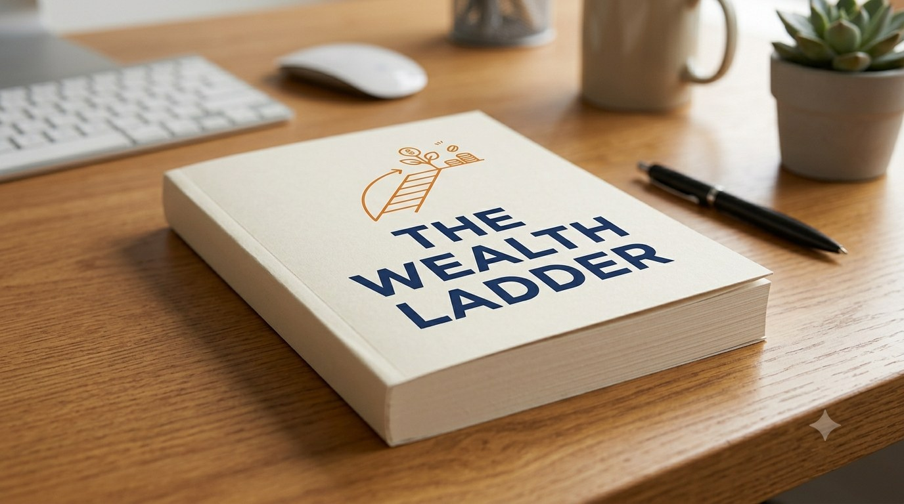

From Living Paycheck to Paycheck to Writing About Wealth
Nick Maggiulli is now the chief operating officer and data scientist at a well-known wealth management firm, but at six years old, his parents divorced and declared bankruptcy. He remembers his mother buying off-brand goods, going without internet for stretches, and never owning a car through high school. He later attended college on financial aid and worked his way up by continually adjusting his approach. The framework in his latest book, The Wealth Ladder, was built directly out of that lived experience.

Three Ways People Relate to Money
The book draws a sharp distinction: people who only focus on saving tend to get trapped in penny-pinching. People obsessed with the numbers themselves — net worth, investment returns — end up measuring their self-worth by a spreadsheet. But the people who go the furthest care less about the money itself and more about what they accomplished through it: what they learned, what they overcame, what they built. Money was never the goal. It's a tool.
Every Level Is a Different Game
Maggiulli's core framework divides household net worth — assets minus liabilities — into six levels, each roughly ten times the last. Level 1 is under $10,000, essentially living paycheck to paycheck. Level 2, $10,000 to $100,000, brings what he calls grocery freedom — not worrying about prices at the store. Level 3, $100,000 to $1 million, brings restaurant freedom. Level 4, $1 million to $10 million, brings travel freedom. Level 5, $10 million to $100 million, brings house freedom. Level 6, above $100 million, brings the freedom to genuinely change other people's lives.
The real point of the framework isn't the dollar amounts — it's that the method that works at each level is completely different. Climbing from Level 1 to Level 2 is mostly about raising income and skills; cutting expenses only goes so far. By Level 3, serious investing, compounding, and tax efficiency start to matter. But past Level 4, saving plus index investing alone barely moves the needle — plenty of households stay stuck at Level 4 for twenty years, not from lack of effort, but because climbing further usually requires business ownership or taking on meaningfully more leverage. The method that got your first $10,000 won't get you your first $1 million.
A Simple Rule for Judging Spending
The book offers one very concrete tool: divide your net worth by 10,000, and the resulting number is roughly what you can spend extra each day without it mattering. At $100,000 net worth, that's about $10 a day. At $1 million, it's $100. The point isn't to actually spend that amount daily — it's a reference point for judging whether a given purchase is genuinely a small deal for you right now. And the benchmark is net worth, not monthly income, because income fluctuates while net worth stays relatively stable, making it a steadier basis for long-term decisions.
Slipping Back a Level Is Normal — Just Don't Stop Completely
Climbing this ladder was never meant to be a straight line. The book is candid that anyone can slip back a level after a job loss or a medical emergency, and that's not a sign your strategy failed. What matters is understanding where you actually stand right now and making the right call from there — slow progress still compounds over time.
That's also why the book pushes back against rigid savings rules — whether it's the traditional "save 10%" or the more aggressive "save 50%" — treating them as fixed law. The better approach is proportional: invest more when you have more room, less when money is tight, but don't stop entirely just because this month is harder. Consistency matters more than the size of any single contribution.
Winning the Lottery Doesn't Always Feel Like Winning
The book offers a striking comparison: receiving the same amount of money through a lottery win versus earning it by building something feels completely different internally. The thrill of winning tends to fade fast — once it's spent on a car, a trip, everything on the wish list — and the account often ends up empty with nothing left to show for it. Someone who earned that same amount step by step, on the other hand, carries a sense of accomplishment that far outlasts the money itself. That's also why people eager to flaunt how much they have are often the least secure internally — all they have is a cold number, no story behind it. The people who've actually gone the distance can tell you exactly how they got there, what they overcame, and what they learned along the way.
No Matter the Level, the Discipline Never Changes
The method changes constantly as you climb from Level 1 to Level 6 — from raising income, to serious investing, to owning a business or taking on real leverage. But one thing stays exactly the same the entire way through: the discipline of continuing to invest. It was never about how much you put in at any given moment — it's about whether you keep doing it within whatever your means allow, without stopping completely just because money is tight or the market looks rough. That's the whole spirit of dollar cost averaging: invest more when you can, less when you can't, but keep going. Consistency is what actually gives compounding a chance to work.
Concepts summarized from Nick Maggiulli's book The Wealth Ladder (2025).